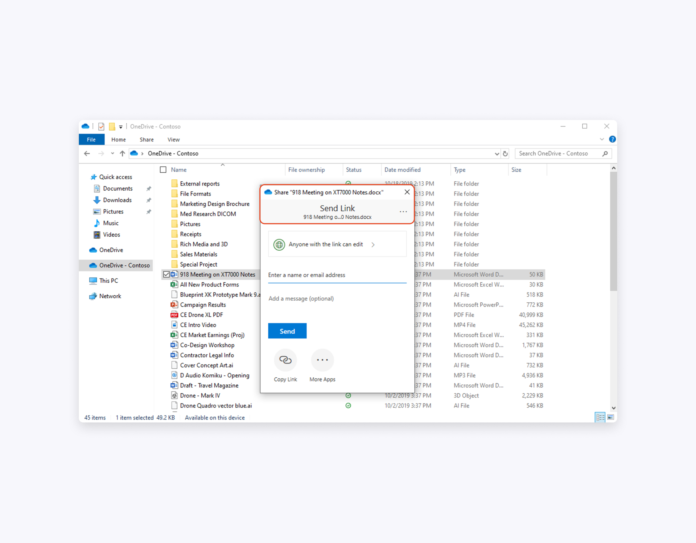
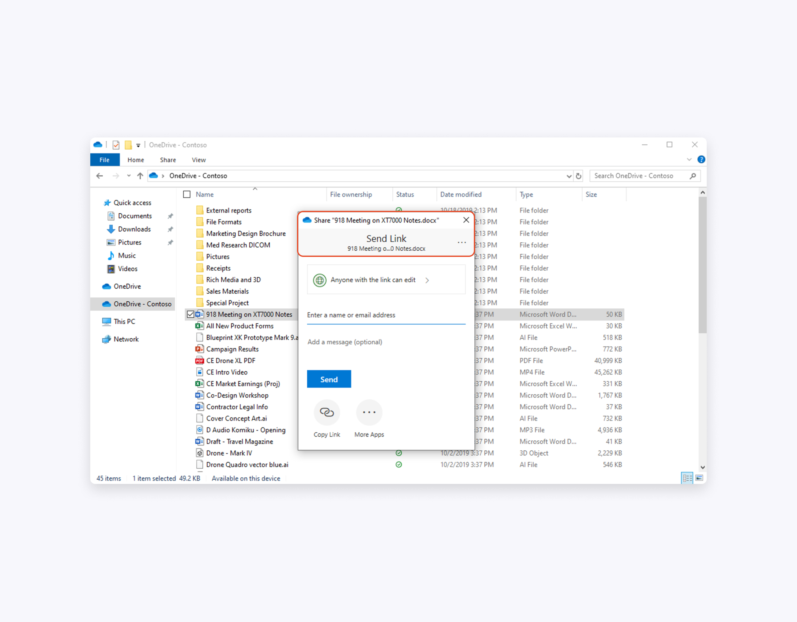
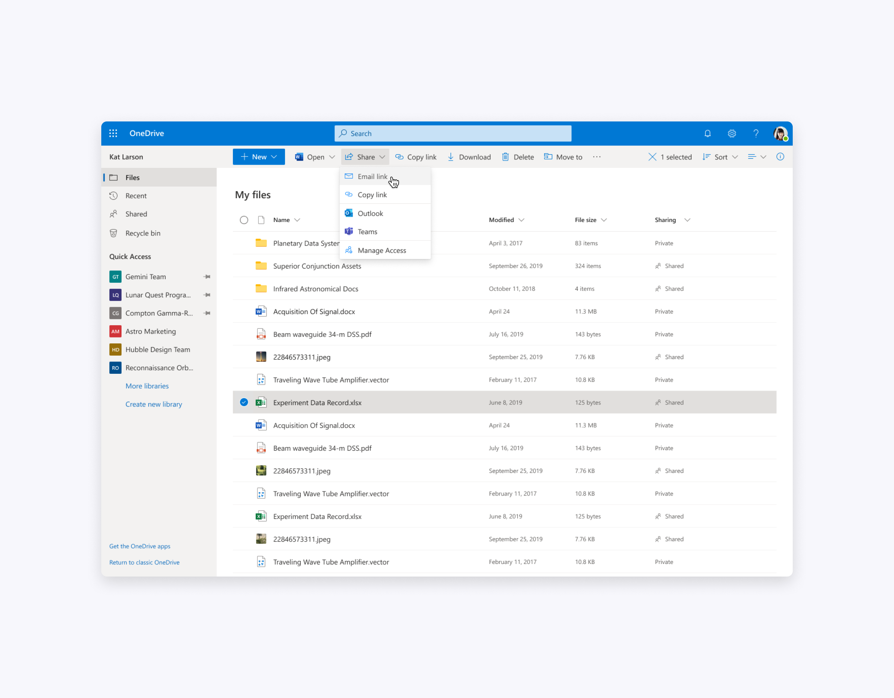
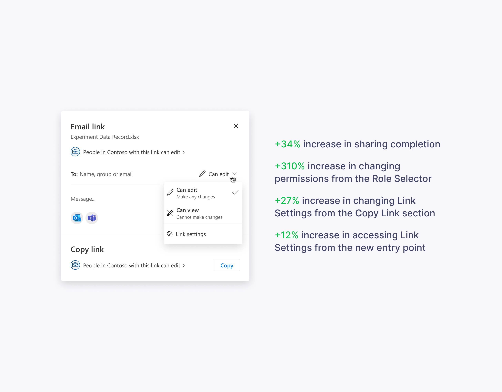
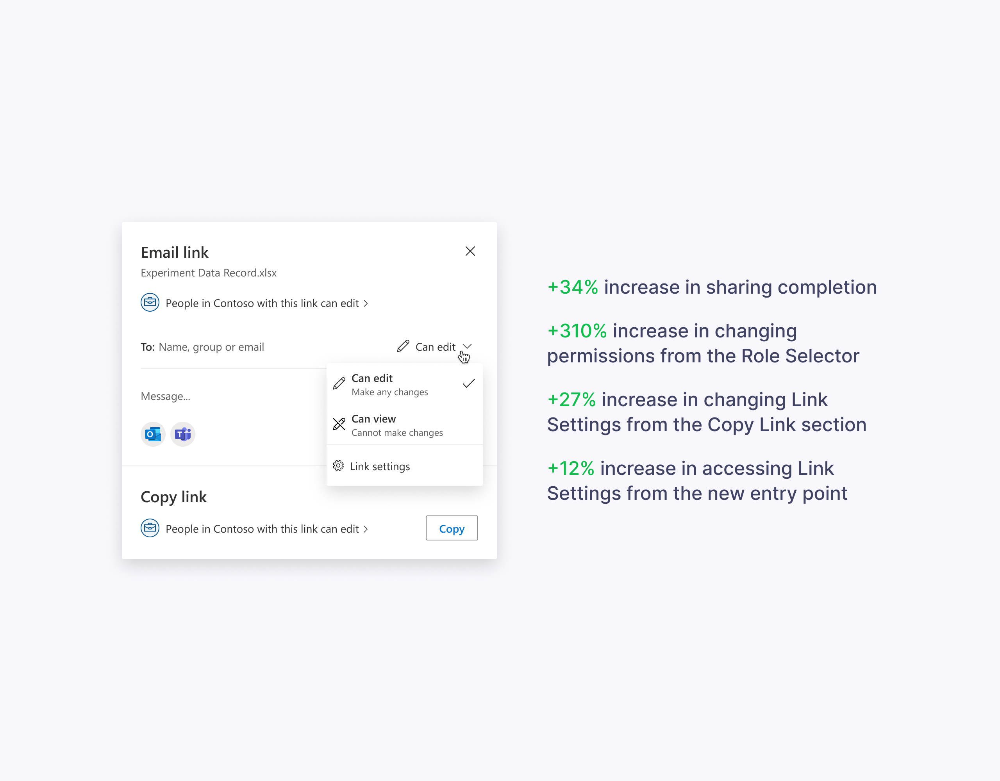

Problems with previous version
OneDrive owns the Sharing Dialog. It appears across more than 40 endpoints across Microsoft products. In 2019 our research team conducted a benchmark study and compared OneDrive’s sharing experience to Google Drive and Box.
Even though the overall functionality received a high score, the OneDrive’s sharing experience scored the lowest. We identified several design drawbacks such as inconsistent headers and placement, hidden Role Selector, and unbalanced width.
 


Users also couldn’t associate link type with the “Copy link” experience.
Brainstorming and design explorations
We organized a series of brainstorming sessions with our partner teams from Office 365. After many meetings and design iterations, we settled on a version that addressed all these design problems.

The main idea of the new design was to split user flow into a series of simple decisions (“Email link” plus “Copy link” and other share targets) instead of complicating the sharing dialog surface with all these options.


We made consistent headers across all the endpoints, brought the Role selector into the sharing dialog surface, and increased the width to give the elements a breath. We introduced a combined “Email link” and “Copy link” experience in the list view on office.com and OneDrive since we couldn’t afford the share menu there.
User testing and planning
To test our assumptions and gather qualitative data we conducted two user studies.

The positive feedback reassured our design direction and we planned incremental updates to our current version.

 

This approach allowed us to observe the telemetry and assess our design decisions with quantitative data.
Next steps and concepts
OneDrive will eventually switch to Fluent icons and look more modern, mobile-friendly, and visually pleasant.
Beyond the conservative design, I also explore concepts with more experimental ideas.
Thanks for reading!